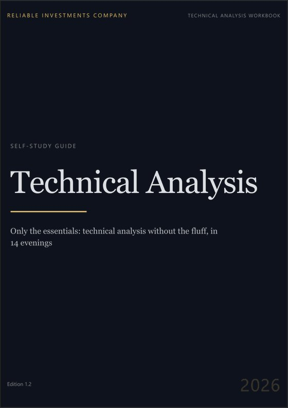

Analisis teknikal.
Hanya yang pokok.
Panduan gratis dari trader praktisi. Tanpa basa-basi, tanpa janji cepat kaya. Klik tombolnya dan PDF langsung terunduh.
Gratis · tanpa pendaftaran
 Analisis Teknikal · RIC
Analisis Teknikal · RICIsinya
- Tren, support, dan resistance
- Pola candlestick dan pola chart
- Indikator dan cara agar tidak membuatnya terlalu rumit
- Manajemen risiko dan ukuran posisi
- Cara memilih broker
Artikel
Artikel dengan bahasa sederhana tentang risiko, drawdown, dan cara kerja uang dalam trading.
Apa itu copy trading dan bagaimana cara kerjanya?
Copy trading artinya trade dari trader berpengalaman diulang secara otomatis di akun Anda. Trader membuka posisi, dan posisi yang sama muncul di akun…
Baca →
Ulasan dan penipuan copy trading: cara mengecek trader sebelum terhubung
Cari "ulasan copy trading" dan Anda akan menemukan dua ekstrem: pujian seperti "deposit saya jadi dua kali lipat dalam sebulan" dan teriakan…
Baca →
Berapa penghasilan dari copy trading? Hitungan jujur dan risikonya
"Berapa yang bisa didapat dari copy trading?" Internet menjawab "100% sebulan" atau "nol, itu penipuan". Kedua ekstrem ini sama-sama menghalangi…
Baca →
Copy trading emas (XAUUSD): cara kerja dan mengapa emas
Emas adalah salah satu instrumen paling populer di pasar Forex — dan salah satu yang paling sulit untuk di-trading sendiri. Emas bergerak cepat,…
Baca →
Akun PAMM, copy trading, atau akun kelolaan: mana yang dipilih
Jika Anda ingin seorang profesional melakukan trading di pasar untuk Anda, biasanya ada tiga pilihan: akun PAMM, akun kelolaan, dan copy trading.…
Baca →
Sinyal emas atau copy trading: mana yang cocok untuk Anda
Sinyal dan copy trading sering dibandingkan seolah-olah Anda harus memilih salah satu. Kenyataannya, keduanya adalah alat yang bagus untuk orang dan…
Baca →
Robot trading emas: EA di terminal Anda atau copy trading — apa bedanya
Robot trading adalah program yang membuka dan menutup trade sendiri sesuai algoritma tertentu. Di Forex biasanya disebut Expert Advisor (EA): robot…
Baca →
Arti drawdown bagi uang Anda — dengan bahasa sederhana
Anda akan menemukan kata ini di setiap laporan yang jujur, dan hampir tidak pernah di laporan yang tidak jujur. Kata ini layak didefinisikan dengan…
Baca →
Komisi hanya dari profit: mengapa jarang dan cara memastikannya
Mulai dari satu kalimat yang menjelaskan seluruh industri ini: kebanyakan orang di dunia keuangan tetap dibayar, entah Anda dapat uang atau…
Baca →
Risiko tetap per trade: mengapa lebih penting daripada persentase return
Saat memilih sistem trading, orang hampir selalu melihat return-nya: "berapa persen per bulan". Itu angka yang paling terlihat sekaligus paling tidak…
Baca →
Cara membaca drawdown trading, dan kapan drawdown itu normal
Drawdown adalah jarak antara puncak akun dan nilainya saat ini. Setiap sistem yang melakukan trading pasti mengalaminya, dan drawdown itu sendiri…
Baca →
Mulai dengan bertanya
Kirim pesan lewat Telegram atau WhatsApp: kami akan menyarankan broker untuk negara Anda dan model risiko yang cocok, menyiapkan demo 14 hari, dan membantu Anda memulai.
Kirim pesan lewat Telegram